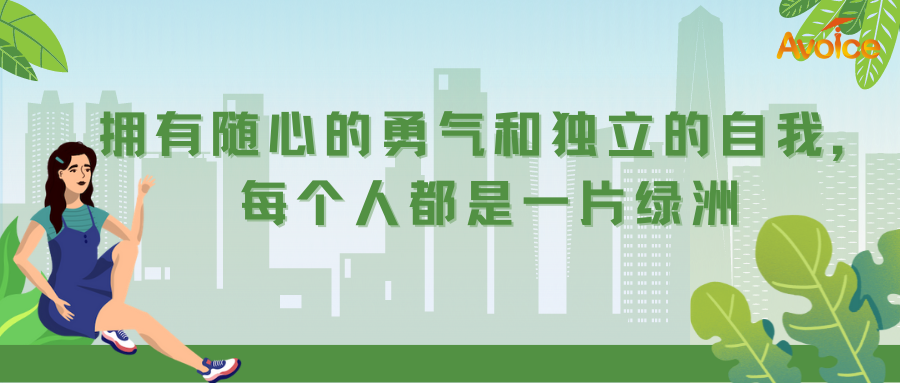
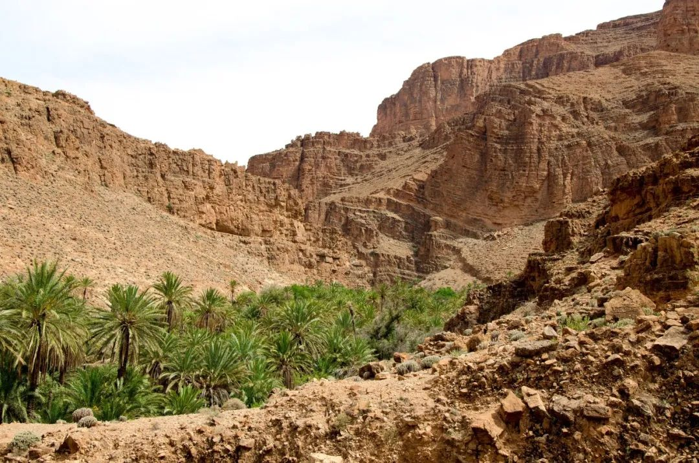
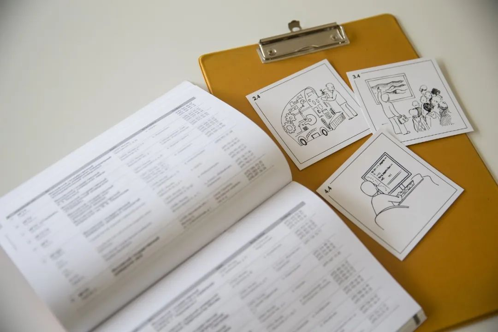
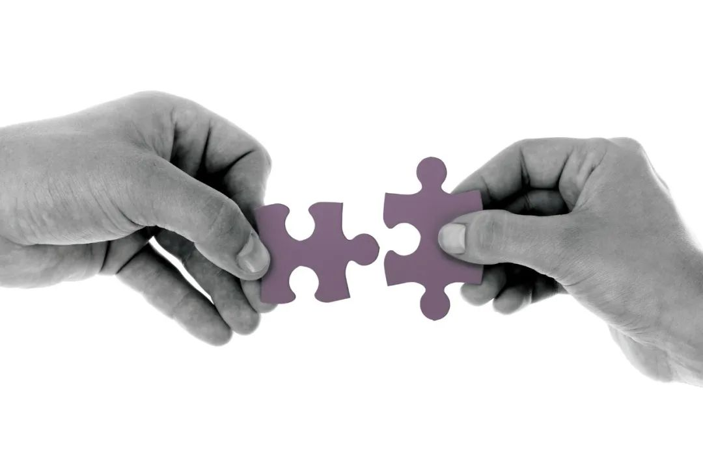
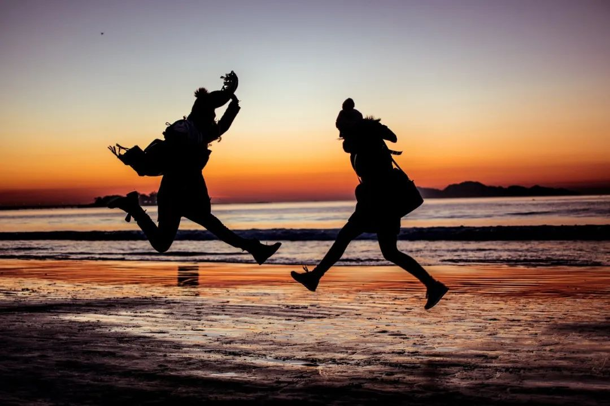
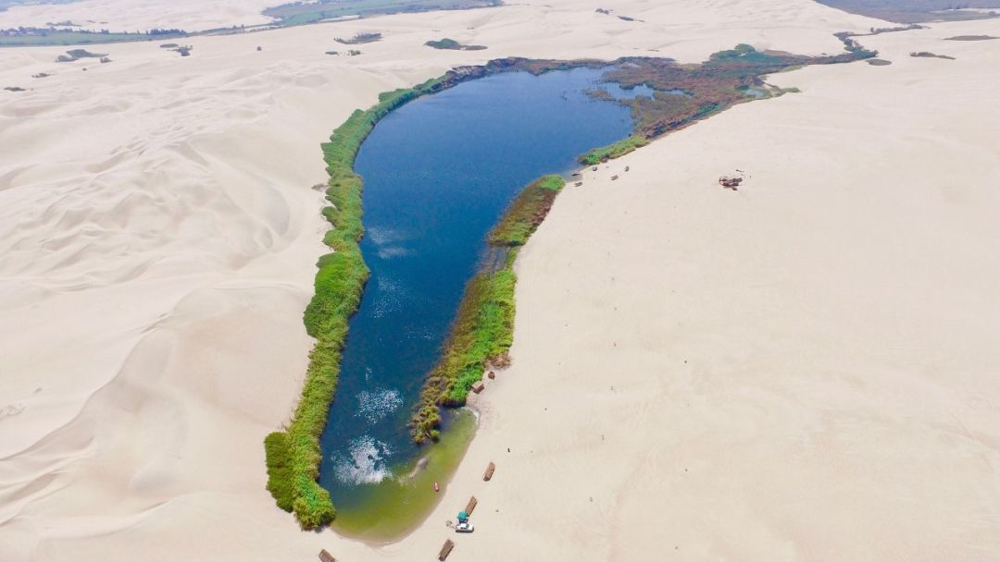
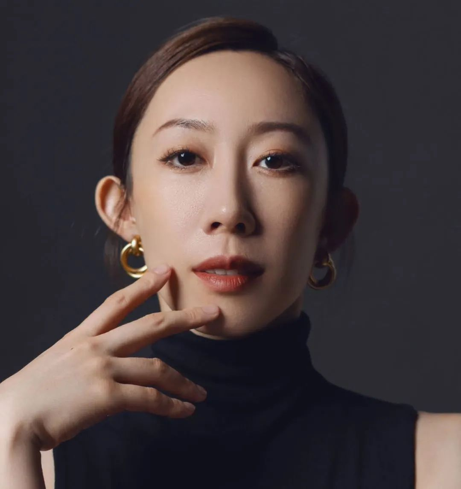

Evelyn is a professional psychologist with knowledge of landscape architecture. She seems to be very special to have been given a mission to "save others" even before she was born. Although she experienced the struggle between reality and ideal on the way to growing up, fortunately, she still becomes a nourishing "oasis," literally like her name
Evelyn had an artistic birth name, "Gezhou." When we first met her, we wondered if there was a beautiful story behind the name. "I grew up in the northwest, where there are a lot of deserts. "My father, even before I was born, thought that no matter if I was a boy or a girl, I should be called Gezhou, like an oasis in the desert, to heal people and give them hope." However, Gezhou seems to have had trouble getting along with this poetic name for a long time. Although she has always understood where the name came from and what it meant, as a child she struggled with gender misidentification due to the name and how much power it carried. "As a child, I used to deliver food to stray animals. On my way of growing up, I have always wanted to pursue an altruistic career, but it was when I grew up and became a professional psychologist that I really felt I was up to what the name meant. "It becomes my creed and deepens my understanding of it through constant practice."

Before becoming a professional psychologist, Gezhou thought she would be a miserable landscape architect. Although she had dreamed of studying psychology in high school, she was defeated by reality when it came time to declare a major in college. "Because my family was not very supportive, and the career path of psychology in China was not clear at that time, I chose landscape design based on my hobby of painting, but then I realized that hobby and passion are completely different things." "Without talent and real passion, it was hard for me to keep going." Fortunately, this "painful" detour not only built up Gezhou’s willpower but also helped her pinpoint where the real passion lies. Thus, she firmly followed the voice of her heart and went to New York to study psychology after graduation. In the process of studying in the United States, she did not feel any suffering, even though she encountered many difficulties. This heartfelt love made the so-called twists and turns shine brightly and brought her closer to her dream, step by step. After graduating with a master’s degree, Gezhou chose to stay in the United States and work as a professional psychological counselor. Like all youngsters who just enter society, the real world they encounter during their work is way darker than any of those depicted in the books. Sometimes she felt enveloped by a layer of gray, and a strong sense of powerlessness came over her. "I encountered the most difficulties, challenges, and insights in my first four years." I didn’t have much social experience when I just graduated. Besides, I have been well protected by my family since I was little, but in my first job, I had to face and come into contact with many of the evils of society. As a result, I also suffered from vicarious trauma and was deeply involved in the experiences of visitors feeling powerless. Research has found that it takes survivors of domestic violence an average of seven attempts to successfully overcome their adversity and receive help. Nonetheless, even after receiving help, some survivors, for one reason or another, have to return to the environment from which they fled. In addition, because of these toxic relationships and experiences, their fundamental values can be profoundly changed. They will find the world very dark and find it hard to believe that their lives will get better. It’s a strong feeling of powerlessness for the survivors themselves and for us as counselors. When I was dealing with these cases, my supervisor would remind me not to get caught up in these feelings. "While empathizing, we learn to think beyond the client’s experiences and into their problems from a more professional perspective." In 2020, the first year of the epidemic, Gezhou was promoted to director of her institution’s mental health clinic in the United States. However, a year after her promotion, she chose to return home. It wasn’t just the identity issues that limited her career in the United States or the homesickness of being on the move. For her, returning home holds some special meaning. "I'm a very family-oriented person, but it’s hard to be truly independent if you’re around your parents all the time." Therefore, my initial goal of going abroad was to experience a different life through this physical separation and realize personal independence at the same time. "During my stay in the United States, I gradually realized my maturity and independence in personality, and I knew that the original goal had been gradually realized." In the interview, we could always intuitively feel Gezhou’s love for psychology and the positive influence brought by his experiences studying and working in the United States. We believe that it is the courage to follow the heart and the independent self-realization brought about by this profound life experience that make her like an oasis in the desert.

Gezhou has extensive experience in counseling in the United States. Her first job after graduating with a master’s degree was to provide counseling for women in New York City, coaching and offering therapy to help them reenter the workplace and rebuild their personal lives. Most cases were domestic violence, sexual assault, and human trafficking, which existed separately and overlapped with each other. The majority of survivors' experiences of sexual assault were in domestic violence. There were also cases of sexual assault in human trafficking. Some women married unsuitable people because they wanted to immigrate to the United States, and thus experienced relationships filled with violence. Some women were lured into economic and sexual exploitation by traffickers under the pretext of getting a job. As a result, to them, nightmares didn’t always happen all at once but more often one after another. They all have their own names, but if it comes down to one, we tend to call them "victims." However, in Gezhou’s eyes, she prefers to call them "survivors." "Most of our clients have too much going wrong in their lives. "We hope that through this change in the usage of identity terms, we can convey more positive feelings to them, starting from the dribs and drabs, finding their shining points, changing the direction of things, and making them think they are doing a good job and feeling their own energy." Of course, a change in name alone is not enough. It seems that an equal and trustworthy inner connection is necessary to truly get inside the interviewees’ hearts. Gezhou’s second job involved dealing with another group of people—African Americans. The job required Gezhou to reach out to local communities and the environment where survivors lived. Because of the huge differences in the environment in which they grew up, the survivors had completely different life experiences from those in Gezhou and suffered from intergenerational trauma. In this job experience, Gezhou was constantly trying to get to know different people, empathize with them, and connect with them. "We’re all so different, but there’s an instinctive desire for this connection in every one of us." The attention, support, and praise you give them can be a great connection builder. "I used to focus more on techniques and therapeutic approaches, but these experiences have taught me that making an equal connection with people is the foundation of therapy."

Gezhou often does individual counseling in the areas of emotional management, marital relationships, personal growth, and interpersonal relationship management. Among these four areas, she always believes that personal growth is the ultimate goal for each person. "All four areas are actually interconnected." However, compared to personal growth, the other three areas mostly become the focus of one’s attention at different stages of life, but they all ultimately aim at personal growth, so it can be said that personal growth covers the other three areas. In the cases I have worked with, when respondents do not have greater distress in the other three areas, their aim is often to learn a little more about themselves to help them grow better. And among the different groups she has worked with, when it comes to attributing psychological problems, she agrees: "Even though their problems are different, the general attribution from a psychological perspective is back to themselves." "The way you are, your traits, and your upbringing all blend into you and thus shape the logic of your behavior." Taking to this point, we seem to be gradually realizing that the cure that brings people back to life in the desert is not only the verdant oasis but also the soul that is full of faith and keeps healing itself. For Gezhou, healing others is often about helping them to have the ability to heal themselves. This statement is especially for the girls.
"When helping women recognize and reshape their values, we always want to help them tap into their inner strengths, support them in becoming more stable and independent individuals, and empower themselves more from their past experiences." "It's like how girls always want to go out and buy new clothes, but actually have a lot of clothes in their closet already." Gezhou used an analogy that impressed us a lot when talking about women’s self-growth. "The restrictions and constraints imposed on women by society and women’s own internalization of them are often the underlying factors that cause women to suffer." We need to spend a long time struggling with external constraints as well as with ourselves. "While constantly breaking through external limitations, it is also important to explore how to accept the inner self and accept that we are inevitably held in its grip." If one is unable to deal with the ego and does not know how to reconcile with oneself, one may fall into the adversity of self-denial. "For example, when we encourage survivors of domestic violence that they actually have the strength to cope with domestic violence, most survivors still fall into a deep sense of self-blame." They will think that's why they didn’t do well even though they had the strength. However, even with this knowledge, we are still inevitably held back by internal or external factors. "What has happened has happened, and what we need more of is to reconcile with our past selves, grasp our energy, and look at a brighter future."

That’s all about Gezhou’s own story for now; the next one is with us.
It’s been several years since she last did counseling work purely for women's groups. Like a kind of return after growth, Gezhou now carries a beginner’s mind to heal others and a more mature experience to become a counseling volunteer at Avoice. In her own way, she hopes to help women build a better self. We also took this opportunity to learn more about topics of women’s psychological growth.
1. Self-Protection and Trauma Recovery in Marital Relationships
2. The role of artistic healing for women


- Yeshiva University心理咨询硕士毕业
- 纽约州执证心理咨询师（LMHC）
- 受训于Milton Erickson Foundation和William Alanson White Institute
- 擅长行为认知疗法（CBT）、辩证行为疗法（DBT）、眼动脱敏再处理疗法（EMDR）和艾瑞克森催眠疗法。
- 曾任纽约市Community Counseling and Mediation心理咨询诊所主任(clinical director)及督导（supervisor）
- 微信工作联系：evelynlilmhc

--- - Interviewers | Esther & Dolcia - Authors & Revisors | 赛儿 & 张妮 - Layout & Cover | Zoey - Translators: Shuting Duan, Jiayu Gui - Proofreader: Natasha Gambanjera - Images source | Pixabay